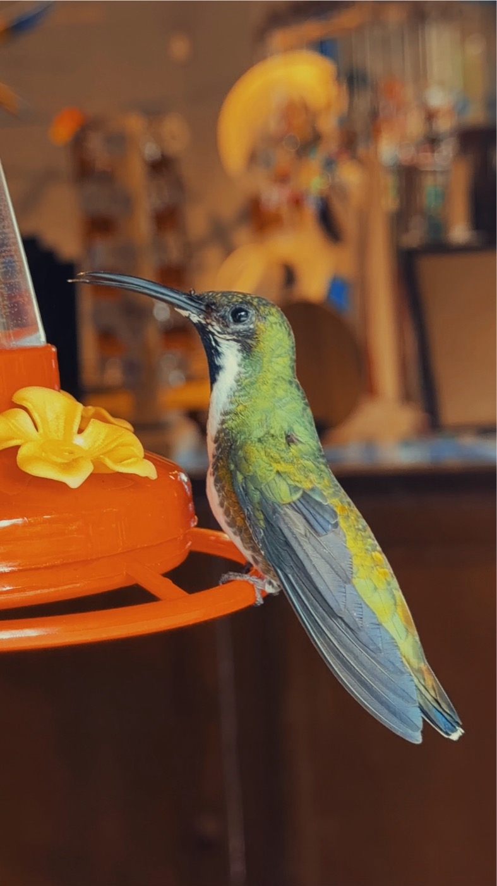

A photograph, a place, and what the place says.
Colibrí · Quindío · June 2026

The days · 19 prints
The coffee was still warm. Nothing needed anything from me yet.
Al que madruga, Dios le ayuda.God helps the one who rises early.Poco a poco se anda lejos.Little by little, one goes far.A new root. I almost missed it.
El que siembra, recoge.Whoever sows, gathers.Más vale pájaro en mano que cien volando.One bird in the hand is worth a hundred flying.Agua que no has de beber, déjala correr.Water you will not drink, let it run.Spanish saying
Cuando una puerta se cierra, otra se abre.When one door closes, another opens.A mal tiempo, buena cara.In bad weather, a good face.Spanish saying
No hay mal que por bien no venga.There is no bad that does not bring some good.We had nowhere else to be for an hour.
Vedi Napoli e poi muori.See Naples, and then die.Chi trova un amico trova un tesoro.Whoever finds a friend finds a treasure.The light stayed longer than we did.
Dopo la pioggia viene il sereno.After the rain comes the clear sky.Il dolce far niente.The sweetness of doing nothing.Italian saying
Roma non fu fatta in un giorno.Rome was not built in a day.Chi va piano va sano e va lontano.Who goes slowly goes safely, and goes far.Il tempo è galantuomo.Time is a gentleman. In the end, it sets things right.Turkish saying
Damlaya damlaya göl olur.Drop by drop, a lake is made.Arabic saying
Al-jār qabl ad-dār.The neighbour before the house.Ar-rafīq qabl at-tarīq.The companion before the road.As-sabr miftāh al-faraj.Patience is the key to relief.A photograph is a line drawn with light.
Not every day gets a picture.
NextThe Aerodrome